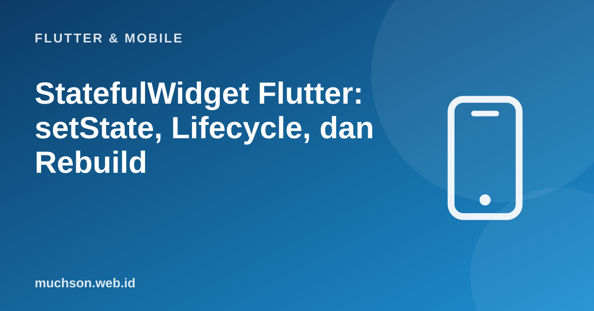

Beranda › Artikel › Flutter & Mobile
Flutter & MobileStatefulWidget Flutter: setState, Lifecycle, dan Rebuild
Widget yang hanya menampilkan data itu statis. Aplikasi menjadi hidup ketika tampilan berubah sebagai tanggapan terhadap sentuhan, ketikan, atau data masuk. Di Flutter, perubahan itu dikelola lewat state, dan setState adalah mekanisme paling dasar yang perlu Anda pahami sebelum mempelajari pustaka manajemen state yang lebih besar.
Sebaiknya sudah paham: widget dan layout Flutter, dasar Dart

Setelah membaca dan mencoba materi ini, Anda mampu:
- membedakan StatelessWidget dan StatefulWidget
- memakai setState dan memahami bahwa ia memicu build ulang
- memahami siklus hidup State: initState, didUpdateWidget, dispose
- melepas sumber daya (controller, langganan) dengan benar di dispose
- mengangkat state ke induk untuk dibagikan antar widget
Contoh Flutter ditampilkan sebagai kode yang mengikuti dokumentasi Flutter 3.x (Material 3, Dart 3). Bagian logika Dart murni dijalankan sungguhan dengan Dart SDK agar keluarannya dapat dibuktikan; kode yang butuh Flutter (widget) tidak dijalankan di halaman ini.
Stateless vs Stateful
| StatelessWidget | StatefulWidget | |
|---|---|---|
| Data yang berubah | Tidak ada; hanya dari parameter konstruktor | Ada: objek State yang hidup lebih lama dari widget |
| Kapan build ulang | Saat induknya mengirim konfigurasi baru | Saat induk mengirim konfigurasi baru ATAU setState dipanggil |
| Contoh | Teks judul, ikon, kartu produk statis | Penghitung, kotak centang, formulir, animasi |
import 'package:flutter/material.dart';
class Penghitung extends StatefulWidget {
const Penghitung({super.key, this.awal = 0});
final int awal; // konfigurasi dari induk (tidak berubah)
@override
State<Penghitung> createState() => _PenghitungState();
}
class _PenghitungState extends State<Penghitung> {
late int _jumlah; // state: milik objek State ini
@override
void initState() {
super.initState();
_jumlah = widget.awal; // dijalankan SEKALI saat State dibuat
}
void _tambah() {
setState(() { // 1. ubah data di dalam setState
_jumlah++; // 2. Flutter menjadwalkan build ulang
});
}
@override
Widget build(BuildContext context) {
return Column(
mainAxisSize: MainAxisSize.min,
children: [
Text('Klik: $_jumlah', style: Theme.of(context).textTheme.headlineMedium),
FilledButton(onPressed: _tambah, child: const Text('Tambah')),
],
);
}
}setState hanya memberi tahu Flutter bahwa data berubah dan build() perlu dijalankan ulang. Mengubah variabel tanpa setState tidak memperbarui layar. Dan bangun ulang itu murah: yang dibuat ulang hanyalah deskripsi widget; Flutter hanya memperbarui bagian layar yang benar-benar berbeda.
Mengintip mekanismenya
// Tiruan dalam Dart murni: State memegang data, setState menjadwalkan build ulang
class WidgetTiruan {
int jumlah = 0;
int jumlahBuild = 0;
void setState(void Function() ubah) {
ubah(); // 1. data diubah
build(); // 2. "framework" membangun ulang
}
void build() {
jumlahBuild++;
print('build #$jumlahBuild -> tampilkan "Klik: $jumlah"');
}
}
void main() {
final w = WidgetTiruan();
w.build(); // build pertama
w.setState(() => w.jumlah++);
w.setState(() => w.jumlah++);
w.jumlah += 10; // diubah TANPA setState
print('data sekarang = ${w.jumlah}, tetapi layar masih menampilkan yang lama sampai build berikutnya');
w.setState(() {});
}build #1 -> tampilkan "Klik: 0"
build #2 -> tampilkan "Klik: 1"
build #3 -> tampilkan "Klik: 2"
data sekarang = 12, tetapi layar masih menampilkan yang lama sampai build berikutnya
build #4 -> tampilkan "Klik: 12"
Siklus hidup State
class _FormPencarianState extends State<FormPencarian> {
late final TextEditingController _kontrol;
StreamSubscription<int>? _langganan;
Timer? _timer;
@override
void initState() {
super.initState();
_kontrol = TextEditingController();
_langganan = widget.aliran.listen((n) => setState(() => _terakhir = n));
_timer = Timer.periodic(const Duration(seconds: 30), (_) => _segarkan());
}
@override
void dispose() {
_timer?.cancel(); // WAJIB: tanpa ini timer terus berjalan setelah layar ditutup
_langganan?.cancel();
_kontrol.dispose(); // controller melepaskan sumber daya
super.dispose(); // super.dispose() DI AKHIR
}
// ...
}Galat umum: setState setelah dispose
Future<void> _muat() async {
final data = await api.ambil(); // tunggu jaringan; pengguna mungkin sudah menutup layar
if (!mounted) return; // PERIKSA dulu: State masih terpasang di pohon?
setState(() => _data = data);
}
// Tanpa pemeriksaan mounted: "setState() called after dispose()" (galat/peringatan).
// Untuk BuildContext setelah await: periksa context.mounted (Flutter 3.7+) sebelum memakai context.Mengangkat state
Bila dua widget bersaudara perlu berbagi data (misalnya filter dan daftar), pindahkan state ke induk bersama terdekat dan kirim nilai ke bawah serta callback ke atas, ide yang sama dengan React. Bila pohon sudah dalam, pustaka state management (Provider, Riverpod, Bloc) mencegah mengirim data lewat banyak tingkat.
class Halaman extends StatefulWidget { const Halaman({super.key}); @override State<Halaman> createState() => _HalamanState(); }
class _HalamanState extends State<Halaman> {
String _kategori = 'semua'; // state diangkat ke induk
@override
Widget build(BuildContext context) {
return Column(children: [
FilterKategori(terpilih: _kategori, onUbah: (k) => setState(() => _kategori = k)), // data turun, aksi naik
Expanded(child: DaftarProduk(kategori: _kategori)),
]);
}
}1. Buat toggle "favorit" yang mengganti ikon hati kosong dan penuh.
2. Mengapa AnimationController harus di-dispose?
3. Dua widget bersaudara perlu berbagi nilai slider. Di mana state ditaruh?
4. Apa bedanya initState dan build?
- StatelessWidget tanpa data berubah; StatefulWidget memiliki objek State berumur panjang.
- setState(() {...}) mengubah data dan memicu build ulang; build harus murni dan cepat.
- Siklus hidup: initState sekali, build berulang, dispose sekali untuk melepas sumber daya.
- Periksa mounted setelah await; angkat state ke induk, dan pertimbangkan state management untuk pohon dalam.